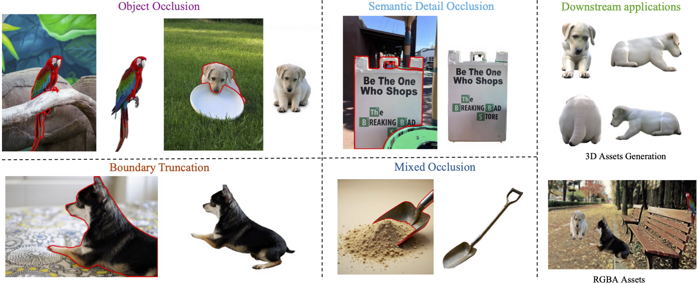
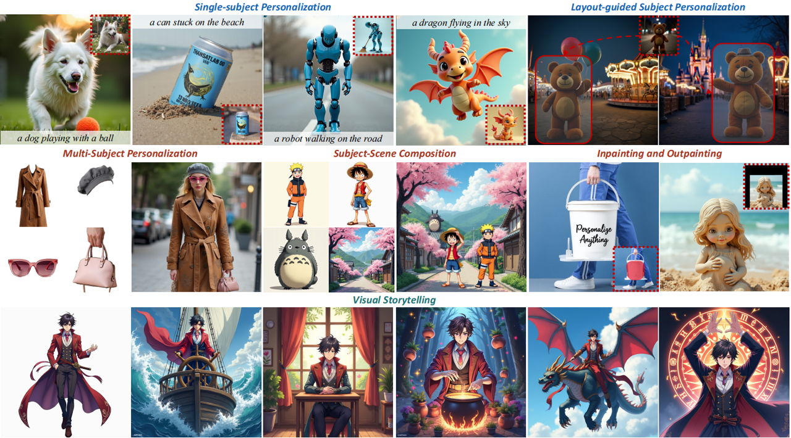
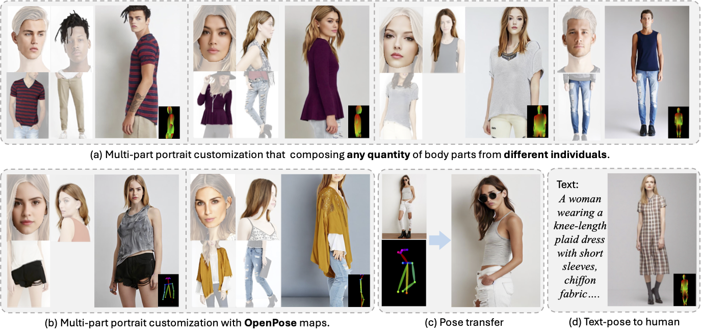

Zehuan Huang (黄泽桓)Final Year Master Student @ Beihang University
Email: huangzehuan@buaa.edu.cn |
Biography
I am a master student in School of Software from Beihang University now, supervised by Prof. Lu Sheng.
My prior research focused on applying deep generative models to 3D asset creation, encompassing the generation of 3D objects, scenes, textures, and animations. My current research interests lie in world models and simulation, including
(i) Generalizable 3D Foundation Models (Generative 3D
Reconstruction, Physics Modeling)
(ii) Interactive World Models (Real-Time, Long-term
Memory,
Physics-Compliance)
I am grateful to all my collaborators and mentors along the way. I first started doing research under the guidance of Prof. Miao Wang. Then I started working on deep learning related projects under the supervision of Prof. Lu Sheng. Besides, I also successively haved intern at MiniMax, Shanghai AI Lab, and VAST, and I'm fortunate to have worked closely with Junting Dong, Yuan-Chen Guo and Yanpei Cao.
I am always open to academic and industrial collaborations, if you share the vision, please do not hesitate to contact me!
News
- [2025-07] One paper Parts2Whole is accepted by TIP.
- [2025-07] One paper is accepted by ACM MM 2025.
- [2025-06] One paper MV-Adapter is accepted by ICCV 2025.
- [2025-05] Open-source bpy-renderer, a python package for rendering 3D scenes and animations using blender.
- [2025-03] Two papers MIDI-3D and Ouroboros3D are accepted by CVPR 2025.
- [2024-07] One paper TELA is accepted by ECCV 2024.
- [2024-03] Invited talk at AnySyn3D on Compositional 3D Scene Generation (video).
- [2024-02] One paper EpiDiff is accepted by CVPR 2024.
Selected Publications

|
MV-Adapter: Multi-view Consistent Image Generation Made Easy
ICCV 2025
TL;DR: Versatile multi-view generation with various
base models and conditions, and high-quality 3D texture generation.
|

|
MIDI: Multi-Instance Diffusion for Single Image to 3D Scene
Generation
CVPR 2025
TL;DR: MIDI-3D extends image-to-3D object generation
models to multi-instance diffusion models for compositional 3D scene generation.
|
|
|
Ouroboros3D: Image-to-3D Generation via 3D-aware Recursive
Diffusion
CVPR 2025
TL;DR: Transfer the two-stage image-to-3D pipeline
into a unified recursive diffusion process, thereby reducing the data bias of each stage
and improving the quality of generated 3D.
|
|
|
|

|
EpiDiff: Enhancing Multi-View Synthesis via Localized
Epipolar-Constrained Diffusion
CVPR 2024
|


Leading Projects
|

|
Multi-Agent Amodal Completion: Direct Synthesis with
Fine-Grained Semantic Guidance
ACM MM 2025
Comming soon...
TL;DR: A multi-agent framework for high-fidelity
amodal completion.
|
|

|
Personalize Anything for Free with Diffusion Transformer
Under Review
TL;DR: Customize any subject with advanced DiT without
additional fine-tuning.
|
|

|
Parts2Whole: Generalizable Multi-Part Portrait
Customization
TIP 2025
TL;DR: A unified framework for customizing human
images
from user-specified part images.
|


Open-Source Projects


Honors & Awards
- [2025] Huawei Scholarship
- [2024] Star of Innovation, School of Software, Beihang University
- [2024] First-Class Academic Scholarship, Beihang University
- [2024] BYD Scholarship from Beihang University Friends Association
- [2024] National Scholarship
- [2024] Outstanding Student Award, Beihang University
- [2023] Huawei Ascend Scholarship
- [2023] Outstanding Graduate Student of Beijing
- [2022] Outstanding Student Award, Beihang University
- [2022] Xiaomi Scholarship from Beihang University Friends Association
- [2022] Aviation Industry Scholarship from Beihang University Friends Association
- [2022] First-Class Innovation and Entrepreneurship Scholarship, Beihang University
- [2022] Second-Class Outstanding Social Work Scholarship, Beihang University
- [2021] Outstanding Volunteer, Beihang University
Educations
- Sept. 2023 - Present, Master, Beihang University, Beijing. Supervised by Prof. Lu Sheng.
- Sept. 2019 - June 2023, Undergraduate, Beihang University, Beijing.
Industrial Experience
- June. 2025 - Present, Tencent Hunyuan, Beijing. Work on 3D geometry foundation models.
- Dec. 2023 - May 2025, VAST, Beijing. Work on 3D asset creation.
- Aug. 2023 - Dec. 2023, Shanghai Artificial Intelligence Laboratory, Beijing. Work on 3D generation.
- May 2022 - June 2023, MiniMax, Beijing. Work on 3D avatar reconstruction, controllable image generation.
Services
Reviewer
ICLR, NeurIPS, CVPR, ICCV, ACM MM, TCSVTContributor
huggingface/diffusers, the most widely-used library for diffusion models.threestudio, a popular repo for 3d generation.
In-School
2023 Fall ~ 2025 Spring, part-time technology counselor in School of Software, Beihang University2024 Spring, TA in Image Processing and Computer Vision, instructed by Prof. Lu Sheng